director of machine learning · upwork · palo alto
Measuring AI,/* in the real world */
ML researcher and engineer working on the datasets, benchmarks, and evaluation methods that show whether AI systems actually hold up outside the lab. Currently leading ML at Upwork on agentic evaluation. Previously Stanford, UIC, Cruise, Magic Leap — across medical imaging, computer vision, and autonomous systems.
Benchmarks & Evaluations
Designing dynamic, real-world benchmarks and evaluation methods that reveal how AI systems truly perform outside the lab.
Computer Vision
Medical imaging, segmentation, object detection, and depth estimation across clinical, autonomous, and augmented reality systems.
AI/ML Foundations
Core methods in deep learning, statistical learning, and representation that underpin modern AI systems and frontier research.
Productionalizing Research
Translating frontier methods into shipped systems, with measurement and reliability built in at every step.
01research / tools· 3 projects
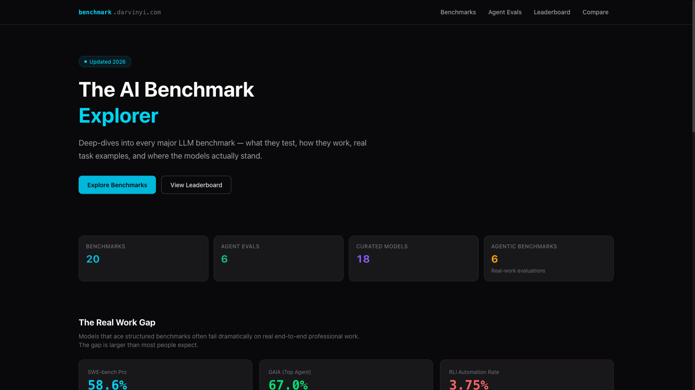
Bench Intel
A benchmark intelligence platform for tracking AI model performance. Compare models, explore correlations across evals, and verify third-party benchmark results.
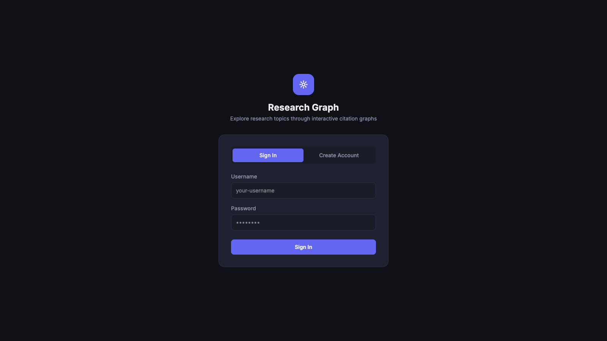
Research Topic Explorer
Search any research area and get an interactive citation graph. Expand nodes, filter by year or citation count, and map a field visually.
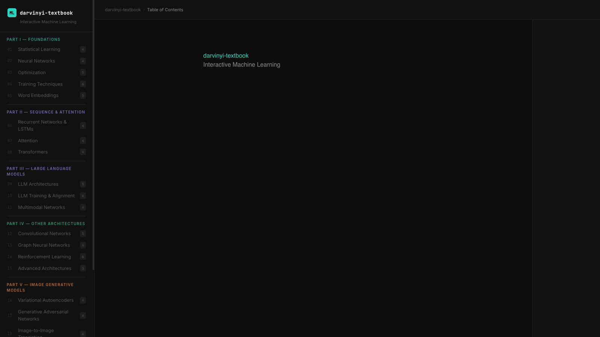
ML Textbook
A 17-chapter interactive web textbook on machine learning — from statistical foundations to AI agents, with embedded visualizations you can explore hands-on.
02photography· 4 projects
Photography
A small portfolio of photo albums. Browse collections in a masonry grid and view full-size in an interactive lightbox.
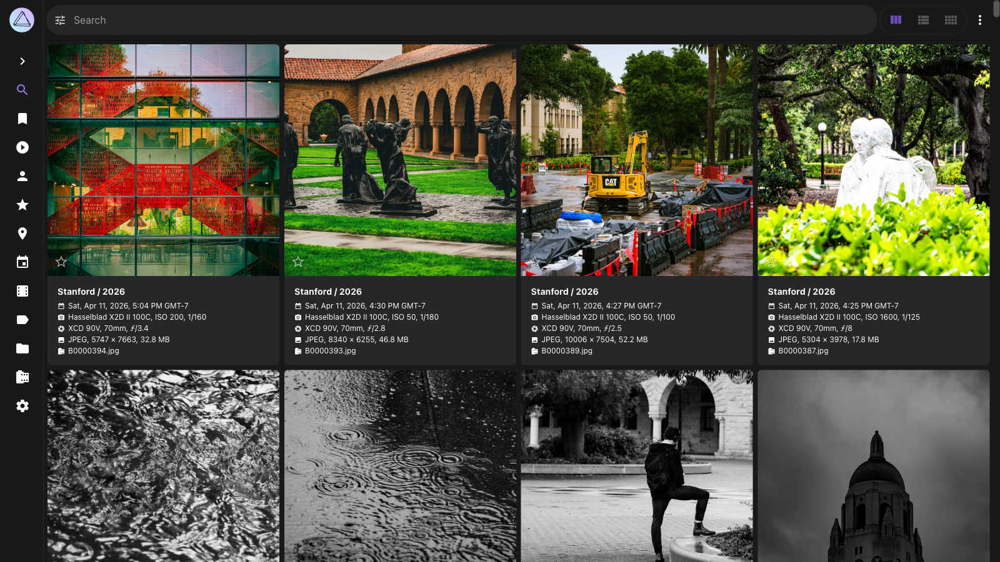
Raw Photos
Unedited, straight-from-camera shots. A less curated window into what I'm pointing a lens at.
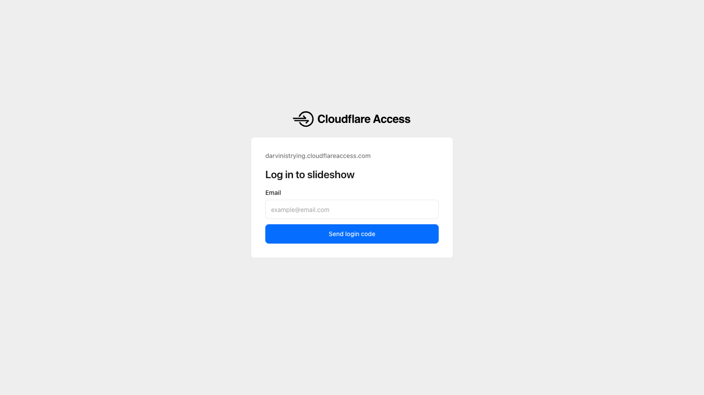
Family Slideshow
A running slideshow of family photos. Built to share moments with the people who matter most.
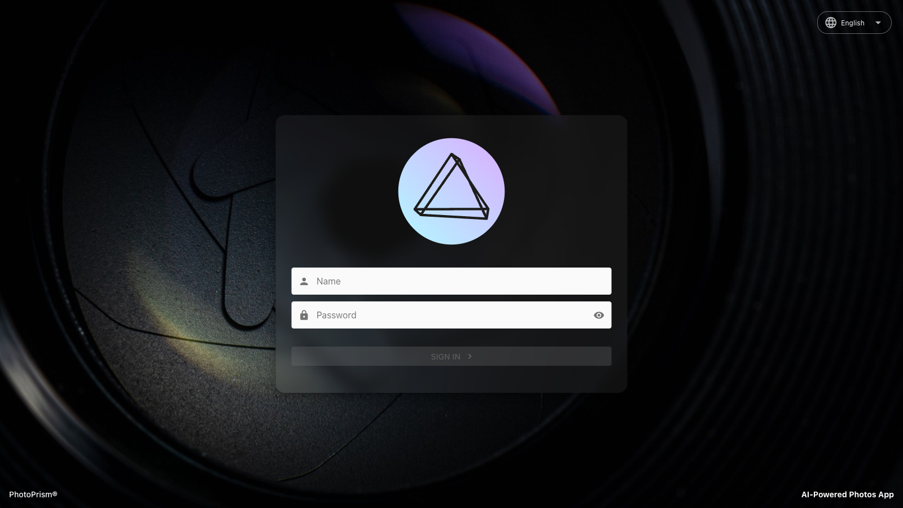
Family Photos
A private collection of raw, unfiltered family photos — a running archive of everyday moments shared with family.
03web apps· 4 projects
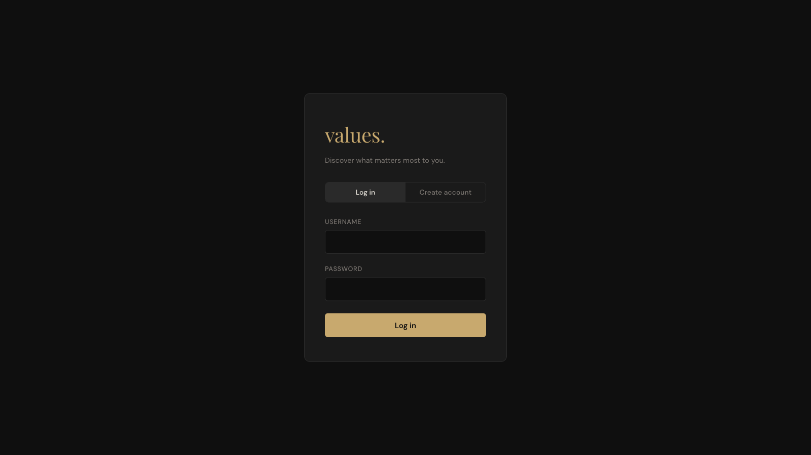
Values Sorter
Sort 107 personal values by importance, track how they shift across sessions, and see what consistently rises to the top.
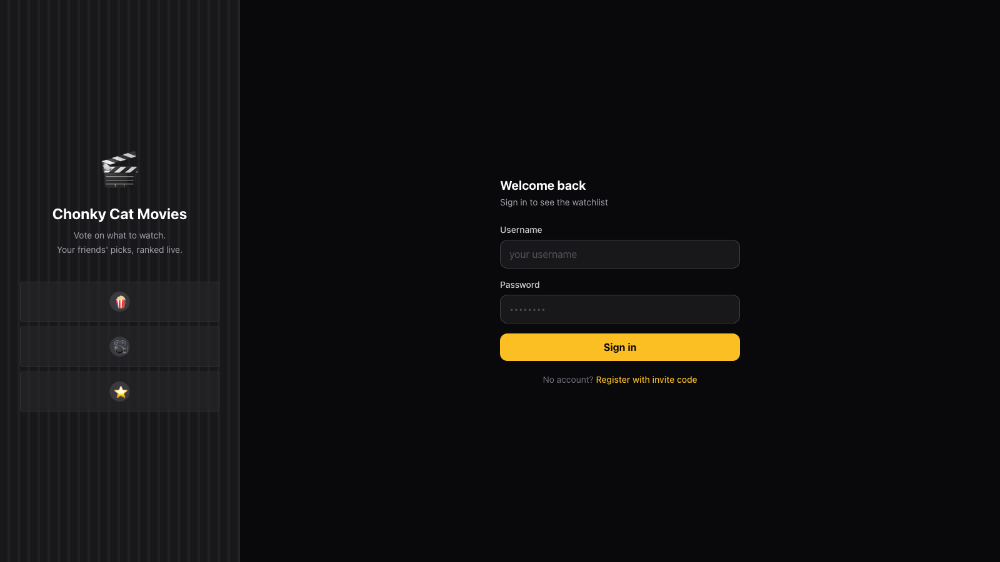
Chonky Cat Movies
Collaborative movie voting for friend groups. Add films to a shared list, vote on what to watch, and track what everyone has seen.
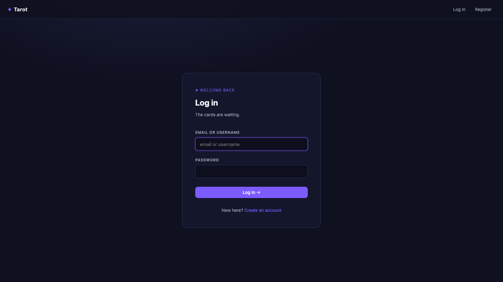
Daily Tarot
AI-powered tarot readings. Draw cards, get interpretations streamed by Claude, and build a history of readings across spreads.
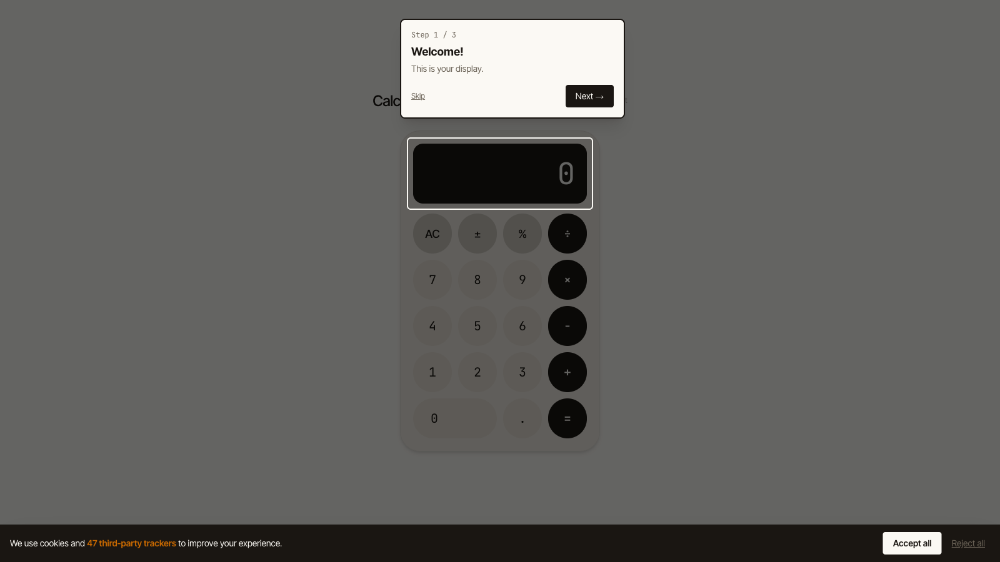
Calculator 2026
A working calculator buried under every dark pattern in SaaS — paywalls, surge pricing, AI upsells, and a 5-second "thinking" animation for basic arithmetic.
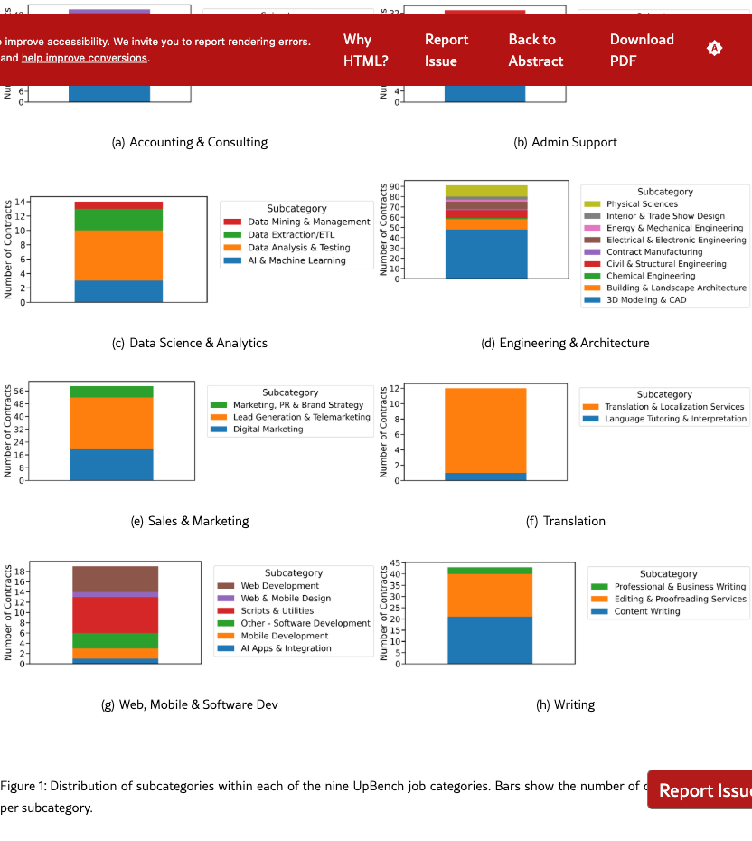
agentic ai · upwork · 2025
UpBench: A Dynamically Evolving Real-World Labor-Market Agentic Benchmark
D. Yi, T. Liu, M. Terzolo, L. Hasson, A. Sinha, P. Mendes, A. Rabinovich
A live, continuously refreshed benchmark built from real labor-market tasks — measuring how agentic systems perform on the kind of open-ended work people actually pay for.
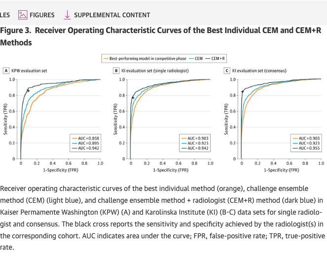
mammography · jama network open · 2020
Evaluation of Combined AI and Radiologist Assessment to Interpret Screening Mammograms
T. Schaffter, D. Buist, C.I. Lee, …, D. Yi, …, G. Stolovitzky — DM DREAM Consortium
DREAM Challenge study showing that combining radiologists with AI ensembles outperforms either alone — a real-world evaluation of human+AI mammography screening.
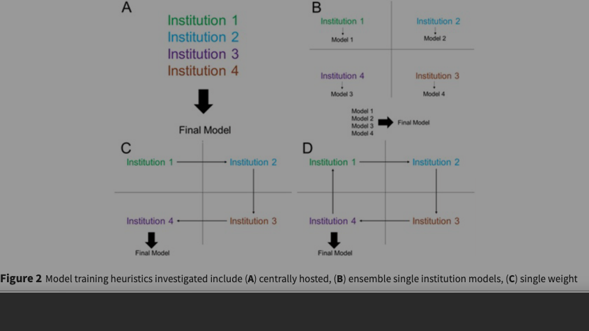
federated learning · jamia · 2018
Distributed Deep Learning Without Sharing Patient Data
K. Chang, N. Balachandar, D. Yi, et al.
An early federated-learning framework for medical imaging — training across institutions without centralizing patient data. Foundational reference for privacy-preserving clinical ML.
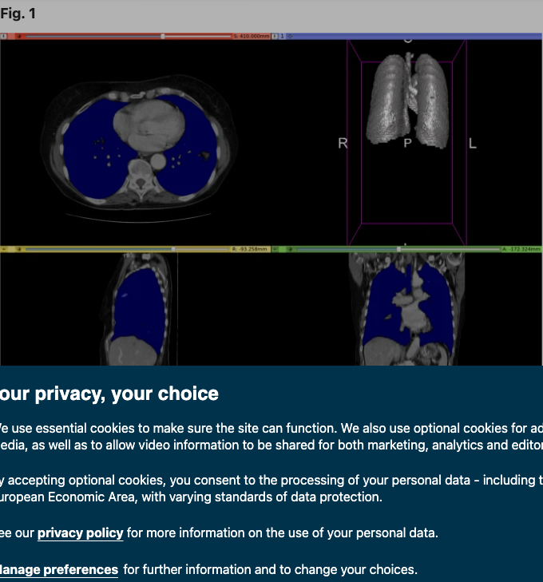
organ segmentation · nature scientific data · 2020
CT-ORG: A New Dataset for Multiple Organ Segmentation in Computed Tomography
B. Rister, D. Yi, K. Shivakumar, T. Nobashi, D.L. Rubin
A public CT dataset with voxel-level annotations across six organs, designed to train and benchmark multi-organ segmentation models.
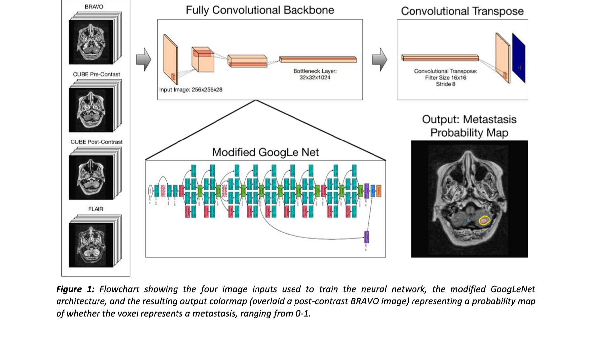
brain metastases · jmri · stanford aimi · 2019
Deep Learning Enables Automatic Detection and Segmentation of Brain Metastases on Multi-Sequence MRI
E. Grøvik, D. Yi, M. Iv, E. Tong, D.L. Rubin, G. Zaharchuk
A multi-sequence MRI pipeline that detects and segments brain metastases automatically — released alongside an open dataset for the research community.
I'm an ML researcher and engineer focused on how we measure AI — the datasets, benchmarks, and evaluation methods that decide whether a system actually works once it meets real users.
My career has moved between academia and industry: a Stanford PhD in biomedical informatics, research at Magic Leap, Sirona, and Cruise, five years co-leading an AI center at UIC, and now leading ML at Upwork on agentic evaluation.
Outside work I make small web tools, take photographs, and try to live a little more intentionally.